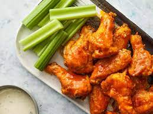

Buffalo Wings

Description
Bufallo wings are delicious, and they can be a relatively cheap way to feed a group of people. The most budget-friendly way to make hot wings is to purchase whole chicken wings, then break them down into drumettes and flats yourself. Of course, you can buy them pre-cut if you're short on time or patience.
Ingredients
- 1/2 cup all-purpose flour
- 1/4 teaspoon ground paprika
- 1/4 teaspoon cayenne pepper
- 1/4 teaspoon salt
- 10 chicken wings
- 2 cups vegtable oil
- 1/4 cup butter
- 1/4 cup hot sauce
- 1 pinch ground black pepper
- 1 pinch garlic powder
Directions
- Whisk together flour, paprika, cayenne pepper, and salt in a large bowl.
- Place chicken wings in the bowl with flour mixture and toss until evenly coated. Transfer wings to a 9x13-inch glass baking dish and arrange in a single layer. Cover and refrigerate for 1 to 1 1/2 hours.
- Add about 1 inch oil to a deep, heavy skillet; heat to 375 degrees F (190 degrees C). (The oil should be just enough to cover wings entirely.)
- Meanwhile, combine butter, hot sauce, pepper, and garlic powder in a separate small saucepan over low heat. Cook and stir until butter is melted and mixture is thoroughly blended. Remove from the heat and reserve for serving.
- Fry coated wings in the hot oil for 10 to 15 minutes, or until they begin to crisp and turn brown. Maintain the oil temperature while cooking. Remove cooked wings from hot oil and let drain on paper towels or a wire rack.
- Transfer wings to a platter and drizzle hot sauce over top; or mix wings and hot sauce in a bowl until coated.